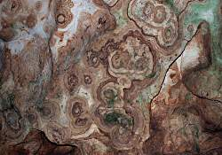

| In Deutsch |
| In Deutsch |
Bären- and Karlshöhle - Erpfinger Höhle
Bears' Cave and Charles' Cave - Cave of Erpfingen
Useful Information
 |
| Image: the big hall of bears' bones. To protect the visitors from the wild cave bears, a two metre high fence was erected. |
| Location: | A81 exit Herrenberg, B28 36km to Reutlingen, B313 direction Sigmaringen, after 23km turn right, 4km direction Erpfingen. 2,5km north east Erpfingen, 20km south east Tübingen. (73,Kb58) |
| Open: |
MAR Sat, Sun, Hol 9-17. APR to OCT daily 9-17:30. NOV, Sat, Sun, Hol 9-17. [2011] |
| Fee: |
Adults EUR 4, Reduced EUR 3, Children (6-14) EUR 2.50, Children (0-5) free, Family (2+*) EUR 10. Groups (20+): Adults EUR 3, Children (6-14) EUR 2. [2011] |
| Classification: |
 Karst cave,
horizontal cave, Malm (jurassic limestone). Karst cave,
horizontal cave, Malm (jurassic limestone).
|
| Light: | electric. |
| Dimension: | L=292m. A=800m asl Karlshöhle L=168m. Bärenhöhle L=103m. GR: L=32m, B=20m, H=10m. |
| Guided tours: | L=271m, D=30min., V=105,000/a [2005], guided and self guided tours. |
| Photography: | |
| Accessibility: | |
| Bibliography: |
Dr. Georg Wagner, ed. (1988):
The Bears' Cave of Erpfingen,
Wolfgang Ufrecht, Thekla Abel & Christof Harlacher (2003): Zur plio-pleistozänen Entwicklung der Bären- und Karlshöhle bei Erpfingen (Schwäbische Alb) unter Berücksichtigung der Sinterchronologie, Laichinger Höhlenfreund, 38 (2), Laichingen 2003, 39-106, 35 Abb., 3 Tab. (  ) )
 english abstract english abstractVarious (2004): Zur Geologie, Paläontologie und Entstehung der Bären- und Karlshöhle bei Erpfingen, Schwäbische Alb (Kat.No. 7621/01), Laichinger Höhlenfreund, 38, Heft 2, pp. 37-196, Laichingen 2003, ISBN: 034468322003 ( )
|
| Address: |
Gemeinde Sonnenbühl, Hauptstraße 2, 72820 Sonnenbühl, Tel: +49-7128-925-0, Fax: +49-7128-92550.
E-mail: Cave: +49-7128-925-18. |
| As far as we know this information was accurate when it was published (see years in brackets), but may have changed since then. Please check rates and details directly with the companies in question if you need more recent info. |
|
 |
| Image: one of the wild cave bears (Ursus spelaeus). |
History
| 30-MAY-1834 | Karlshöhle discovered by schoolmaster Fauth from Erpfingen. | |
| 1934 | electric light installed. | |
| 1949 | Bärenhöhle discovered by the guide Karl Bez. | |
| 1950 | development and opening of the new section. |
Description
|  |
| Image: this circular shapes at the ceiling are the remains of stalactites, which were destroyed almost completely by cave ice during the Ice Age. |
The Karlshöhle (Charles' Cave), the first part of the Bärenhöhle (Bears' Cave), was discovered by the school teacher Fauth, while he was looking for herbs. The entrance was called Fauthsloch to his honor. This original entrance can be seen, 20 m behind todays entrance. It is a cleft, about 50cm wide, which resulted from the collapse of a piece of the ceiling. In the Middle Ages plague victims were probably thrown into this cleft. Several skeletons were found in the debris under the cleft.
The Charles' Cave is today entered through a tunnel and left at the end of the Bears' Cave by another tunnel. The tour follows the cave in the opposite direction of the brook, which once formed it.
At the discovery of the Charles' Cave were huge amounts of
cave bear
(Ursus spelaeus) bones on the floor.
But because of unsatisfactory protection of the cave, the bones were soon
despoiled.
They were used by the people as a fertilizer.
The bears entered the cave not by the Fauthsloch, but by an entrance at the other end of the cave, near the artificial exit. This entrance collapsed many thousand years ago. Fortunately, a section in the middle of the cavern was also closed, so the Charles' Cave was only one half of the cave.
 |
| Image: the hidden connection to the Bärenhöhle. |
The continuation of the cave was discovered in 1949 by the cave guide Karl Bez. A small crevice at the end of the Charles' Cave, which was more than 5m above ground in an over-hanging cliff, was a natural connection. It was used by bats to fly from one part of the cave to the other. Karl Bez saw the bats flying into the crevice and tried to follow them.
The first bear skeletons are situated in the small connecting corridor. Much more bone are to be found in the following larger chambers. Due to the many bones, the new section was soon called Bears' Cave. Today Bears' Cave is the common name used for the whole cave.
The bad experiences with the looting of Charles' Cave, convinced the cave administration to leave the bones, if possible, at their discovery site. The cave was left nearly in the original state, just despite the tour path, and so the cave is today really worth a visit.
Originally, to reach the Bears' Cave from Charles' Cave, the 5m high cliff had to be climbed. This connection is not suitable for the cave bears, they were not able tho reach Bears' Cave this way. There must have been another entrance, which was later blocked. But the location of this former entrance is unknown.
A recreational park above the cave makes it a popular trip target on weekends. Visitors prefering a peaceful visit to the cave with the possibilty to take a little more time for the cave itself, should avoid weekends - especially those with good weather. On days with few visitors the cave can be visited on self guided tours!
 |
| Bärenhöhle Gallery |
- See also
- Bärenhöhle
by Tony Oldham (1965).
- The Cave Bear
- Bears' Caves
 Search Google for "Bärenhöhle"
Search Google for "Bärenhöhle" Google Earth Placemark
Google Earth Placemark Bärenhöhle - Wikipedia
(visited: 02-MAR-2011)
()
Bärenhöhle - Wikipedia
(visited: 02-MAR-2011)
() Bärenhöhle - Allgemein
(visited: 02-MAR-2011)
official webpage of the town Sonnenbühl.
()
Bärenhöhle - Allgemein
(visited: 02-MAR-2011)
official webpage of the town Sonnenbühl.
()- Info Center: Germany for the Youth - Sport, Leisure & Adventure
(visited: 26-FEB-2011)